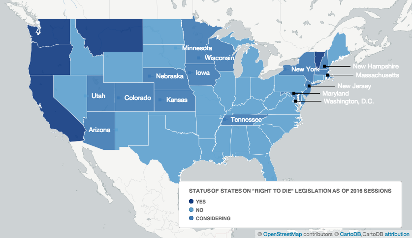
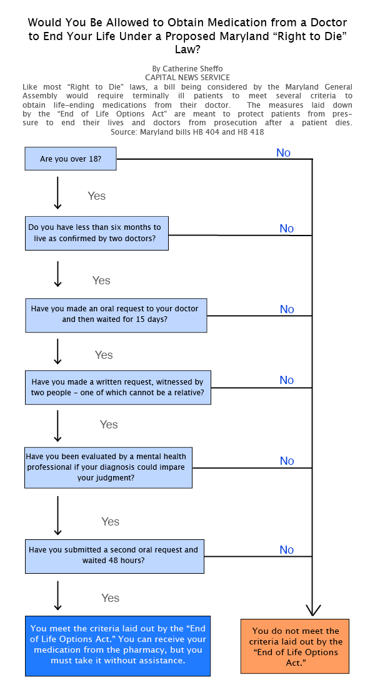

Maryland Could Join Small Number of States with 'Right to Die' Legislation
By CATHERINE SHEFFO
Capital News Service
A state House committee heard testimony from dozens of people Friday on the "End-of-Life Option Act," which would allow terminally ill patients to choose to end their own lives with medication prescribed by a doctor. If Maryland lawmakers pass the controversial legislation, they would join a handful of states that have approved physician-assisted suicide. Four states -- California, Oregon, Washington and Vermont -- have laws approving the practice. In Montana, the practice was legalized by a court decision and the legality of assisted suicide is under court review in New Mexico. This year, lawmakers in Maryland, Alaska, Hawaii, the District of Colubmia and 13 other states are considering legalizing the practice. Source: Maryland Dept. of Legislative Services, DeathwithDignity.org

